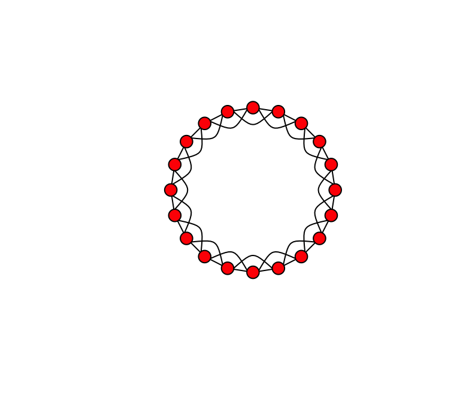
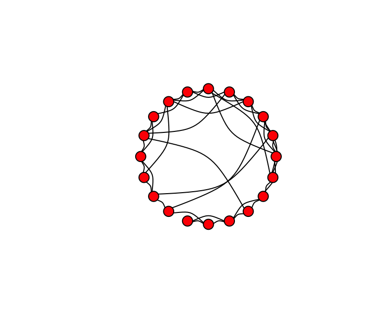
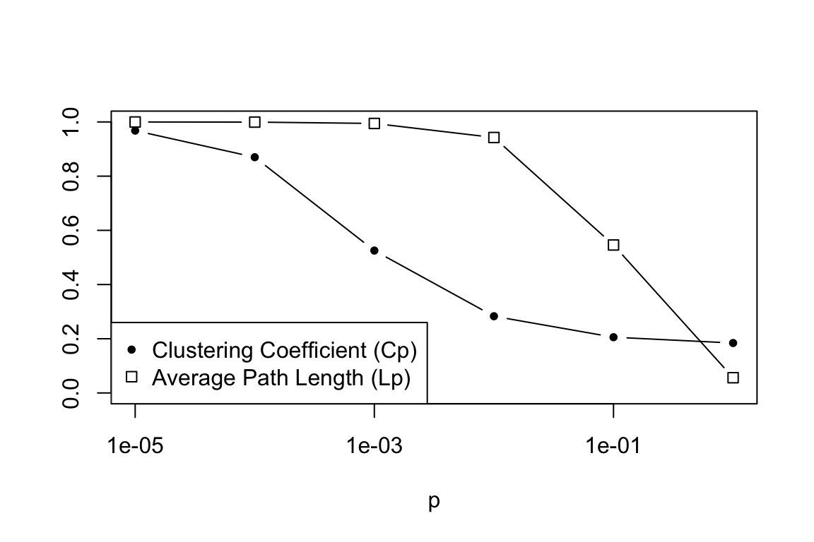
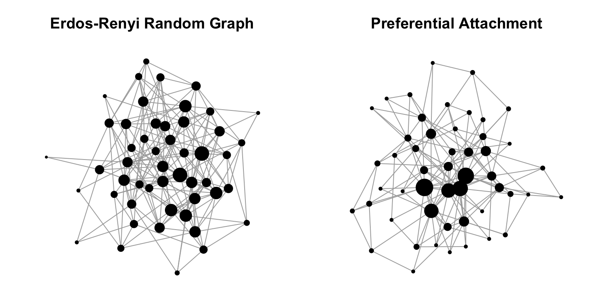

Small World and Scale-Free Networks
Dai Shizuka
7/10/2018
1. Exploring the Small-World Effect
In 1998, Duncan Watts and Steve Strogatz published one of the most influential papers in network theory (it has been cited over 36,000 times as of July 2018). In it, they show how, in between “regularity” and “randomness” lies a range of disorder in which networks exhibit a property they call “small-world”: They are highly clustered but have small average path lengths. That is, each node is connected to every other node with small degrees of separation, despite the fact that most nodes exist in tight clusters.
Here is the figure in the paper that describes the dynamic:

Figures 1 and 2 from Watts & Strogatz 1998
Let’s begin by creating a ‘lattice’ or ‘regular graph’ (i.e., all nodes have the same degree). Here, we will make a regular graph with 20 nodes in which all nodes are connected to their adjacent node and their ‘second-degree neighbor’. We can use a function called make_lattice(). We’ll call the object lat.
library(igraph)
lat=make_lattice(dimvector=20, nei=2, circular=T) #dimvector=20 means 20 nodes in a line. nei=2 means connect up to neighbor of neighbor. circular=T means connect the ends to make a ring.Try plotting that and see what it looks like. If you want to really make it look like the figure in Watts & Strogatz, copy these arguments:
plot(lat, layout=layout.circle, edge.curved=c(rep(0,20), 1, -1, -1, rep(1,17)), vertex.color="red", edge.color="black", vertex.label="")
Now, we want to start rewiring the edges of this network at some probability. We can use a function called rewire(). This function allows us to rewire edges in a graph at given probability. Let’s rewire the lattice graph with probability p = 0.1.
g.new=rewire(lat, with=each_edge(p=0.1, loops=F))
plot(g.new, layout=layout.circle, edge.curved=T, vertex.color="red", edge.color="black", vertex.label="")
(Your figure will look different than mine.) Try this again, but this time change the rewiring probability to p = 1. You might get something like this.
Now we can make Figure 1 by plotting these three figures side-by-side:
# First create the lattice
lat=make_lattice(dimvector=c(20), nei=2, circular=T)
# Next make rewired version with low p (e.g., p = 0.1)
g1=rewire(lat, with=each_edge(p=0.1, loops=F))
# Finally, make the rewired version with p = 1
g2=rewire(lat, with=each_edge(p=1, loops=F))
# Make a plot with three figures lined up in a row
par(mfrow=c(1,3), mar=c(1,1,1,1))
plot(lat, layout=layout.circle, vertex.label="", vertex.color="red", edge.color="black", edge.curved=T)
plot(g1, layout=layout.circle, vertex.label="", vertex.color="red", edge.color="black", edge.curved=T)
plot(g2, layout=layout.circle, vertex.label="", vertex.color="red", edge.color="black", edge.curved=T)
There are a couple of tweaks you could make, but this is a pretty good replication of the figure!
Now, for Figure 2—which is the real ‘meat’ of the paper. A main thing to note about the difference between Figure 1 and 2 is that they use a much larger network to get the data for Figure 2. Here, we’ll use a network with size = 500 and “nei”=10. The goal is to tweak p between 0 and 1 and calculate the ‘local’ clustering coefficient (the proportion of a neighbors of a node that is connected, averaged over all nodes) and the ‘characteristic path length’ (average geodesic path length). We’ll use six values for p: 0.00001, 0.0001, 0.001, 0.01, 0.1, and 1. To reduce stochastic variation a bit, we’ll do 25 replicates of the graph at each value of p. Again, for each time we make a graph, we’re going to calculate two values (clustering coefficient, C, and characteristic path length, L). This means that we’ll need a 25 x 6 matrix to store these values, and then we’ll later take the average values for graphs of a given p.
Here’s the code:
L=matrix(nrow=25,ncol=6)
C=matrix(nrow=25,ncol=6)
s=c(0.00001,0.0001,0.001,0.01,0.1,1)
lat=make_lattice(dimvector=500, nei=10, circular=T)
for (j in 1:6){
for (k in 1:25){
g=rewire(lat, with=each_edge(prob=s[j], loops=F))
L[k,j]=average.path.length(g)
C[k,j]=transitivity(g,"localaverage")
}
}L0=average.path.length(lat) #average path length of lattice
C0=transitivity(lat, "localaverage") #clustering coefficient of lattice
Lp=L/L0 #The average path length of graph relative to lattice
Cp=C/C0 #The clustering coefficient of graph relative to latticeNow we can calculate the means of these values at each rewiring probability. That is, we want to take the means of the columns of the matrices Lp and Cp.
colMeans(Lp)## [1] 0.9681396 0.8698270 0.5254132 0.2831218 0.2056743 0.1842598colMeans(Cp)## [1] 0.99986750 0.99943621 0.99448400 0.94261442 0.54598957 0.05621782plot(s,colMeans(Lp),type="b",pch=20,log="x",ylim=c(0,1),xlab="p",ylab="") #ylim=c() argument sets the range of the y-axis
points(s,colMeans(Cp),type="b",pch=0,ylim=c(0,1),xaxt="n",yaxt="n",xlab="",ylab="") #xaxt="n" and yaxt="n" means "don't plot the x-axis or y-axis". This is because we've already drawn these axes in the previous plot. xlab="", ylab="" keeps the axis labels blank as well.
legend("bottomleft", pch=c(20,0), legend=c("Clustering Coefficient (Cp)", "Average Path Length (Lp)"))
2. Scale-free networks
Now we’ll move on to the idea of power-law or “scale-free” degree distributions in networks. If you recall, Barabási and Albert (1999) proposed that degree distributions of many real-world networks follow a power-law. This is significant because a major characteristic of a power-law distribution is that you can have some nodes with very very high degree. That is, the degree distribution has a ‘fat-tail’. These very high degree nodes
may be very important nodes in the network. Barabási and Albert also proposed a mechanism by which you might get a power-law degree distribution: the so-called “preferential attachment” model, in which the network starts out with a few nodes, and as it grows the new nodes attach preferentially to the nodes that have relatively high degree.
There is a pre-packaged function in igraph for modeling this preferential attachment process, called barabasi.game(). We’ll use this to quickly demonstrate how you can get a figure similar to Figure 2A in Barabási and Albert (1999), and how this differs from the degree distribution of an Erdös-Renyí random graph.

First, let’s start by producing two graphs—one with the random graph model, and one with the preferential attachment model.
g1=erdos.renyi.game(50,p=0.15)
b1=barabasi.game(50,power=1,m=3,directed=FALSE)
summary(g1)## IGRAPH 9849662 U--- 50 195 -- Erdos renyi (gnp) graph
## + attr: name (g/c), type (g/c), loops (g/l), p (g/n)summary(b1)## IGRAPH 7073c37 U--- 50 144 -- Barabasi graph
## + attr: name (g/c), power (g/n), m (g/n), zero.appeal (g/n),
## | algorithm (g/c)So we have produced two graphs of the same size and roughly the same number of edges. Let’s plot these graphs side-by-side. And for illustrative purposes, we’ll make the sizes of the vertices proportional to their degree. We’ll also use a force-directed layout algorithm (e.g. Fruchterman-Reingold) so that we can get a sense for how the network is structured.
par(mfrow=c(1,2),mar=c(1,1,3,1))
plot(g1,layout=layout.fruchterman.reingold,vertex.size=degree(g1),vertex.label="",vertex.color="black",main="Erdos-Renyi Random Graph")
plot(b1,layout=layout.fruchterman.reingold,vertex.size=degree(b1),vertex.label="",vertex.color="black",main="Preferential Attachment")